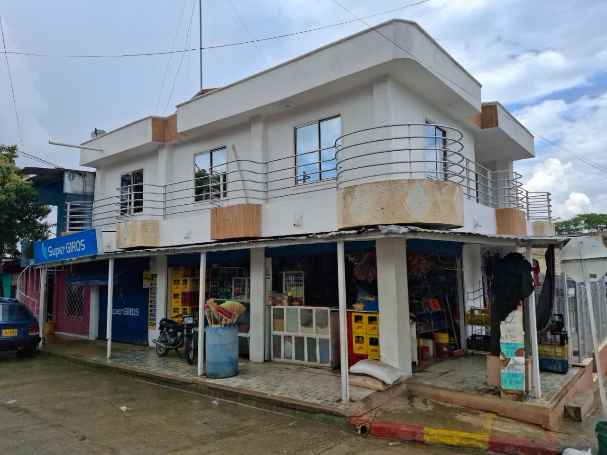
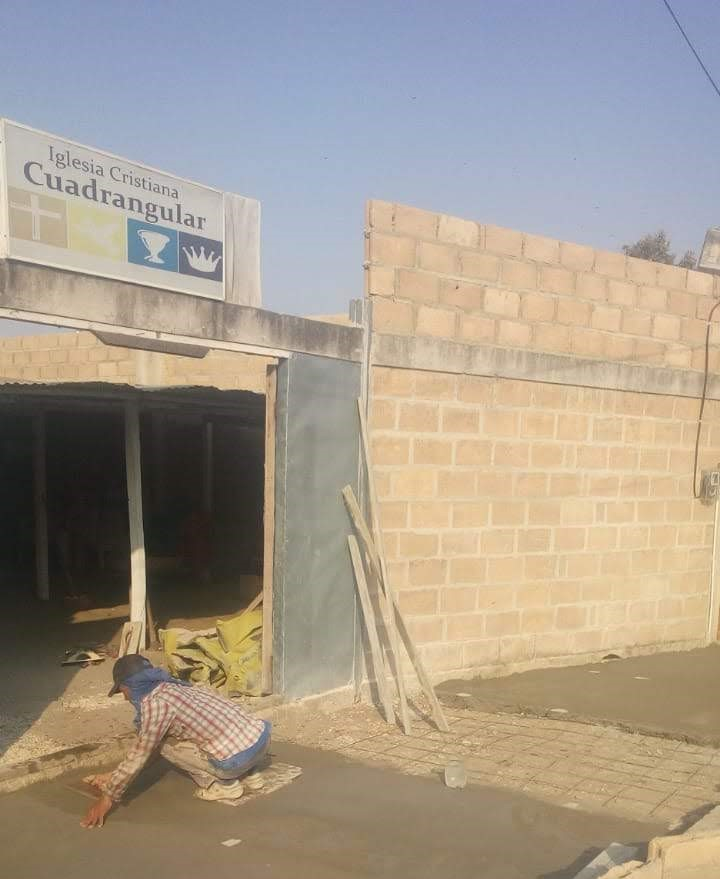
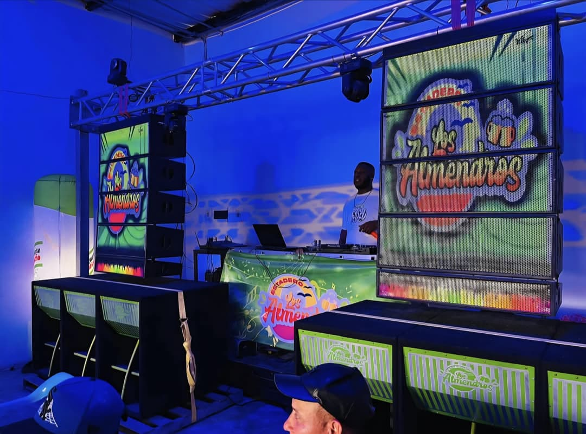
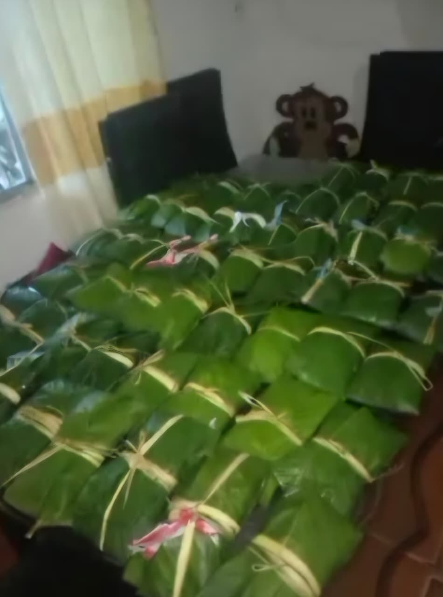
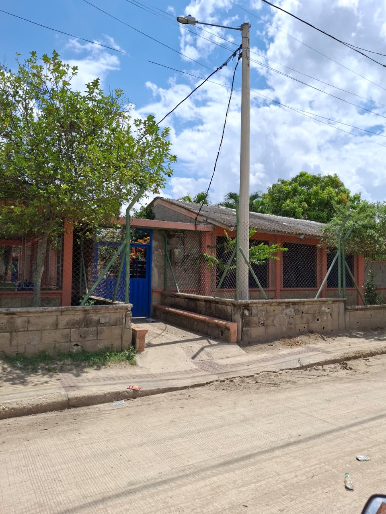
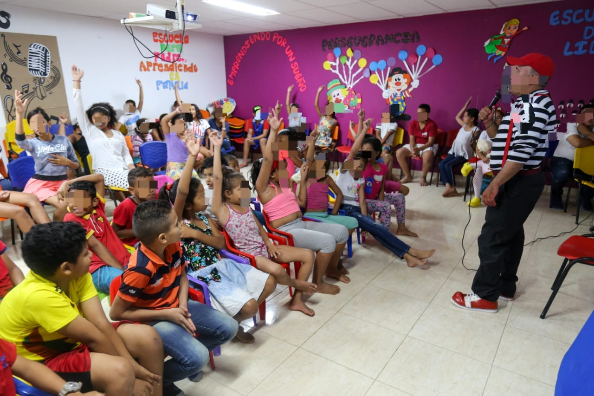

El Territorio

Cendes: 2026. Esta fundación funciona desde hace muchos años, convirtiéndose en una especie de salón. Actualmente funciona para atender a adultos mayores y niños de otra fundación.
El barrio Uribe Uribe es uno de los barrios tradicionales más grandes de la ciudad de Sincelejo, que destaca por su cultura, tradiciones y gente trabajadora. Acompáñame a un viaje por los lugares más conocidos de este sector...
Cendes: 2026. Esta fundación funciona desde hace muchos años, convirtiéndose en una especie de salón. Actualmente funciona para atender a adultos mayores y niños de otra fundación.

Tienda: 2026. Esta tienda funciona desde hace aproximadamente 25 años y es un referente del barrio como punto de encuentro.

Iglesia: desde el año 2015 esta iglesia se ha convertido en un lugar de referencia en el barrio.

Estadero: este lugar hace parte de los puntos estratégicos del barrio y es conocido por muchas personas de la ciudad.

Artesanías: 2026. Pedro es una de las personas que empezó a trabajar en Sincelejo las artesanías con cerámica a base de arcilla desde hace 17 años.

Fritos de la esquina: este puesto de fritos funciona desde hace 12 años y ya ha crecido bastante desde su fundación y es el puesto más conocido en todo el barrio.

Pasteles: este es un negocio familiar que funcionó durante 2 años y que los hacían en la plazoleta del barrio.

Grupo de baile: esta es la comparsa del barrio y han sido ganadores de varios premios por su gran talento.

Colegio: primaria de La Unión. Es un colegio que existe desde hace casi 20 años y brinda su espacio a niños de toda la comunidad y barrios aledaños.

Centro de salud: ya no se encuentra en funcionamiento para atender a pacientes por cuestiones de salud, pero aquí se reúnen madres gestantes y lactantes para recibir charlas y capacitaciones.

Fundación de cendes: aquí se atienden a niños sobre todo pertenecientes al colegio La Unión, donde se fortalecen capacidades de arte, lectura y escritura.

Casa antigua del señor que vende chanclas: esta casa funcionaba como un emprendimiento de un señor mayor de edad, lastimosamente sufrió un incendio y tuvo que ser reconstruida.

Ahora

Basurero y arroyo: este arroyo atraviesa toda la ciudad y pasa por el relleno sanitario y trae consigo basuras que afectan a la comunidad cuando llueve.

Calles dañadas: la falta de infraestructura se convierte en un problema a la hora de transitar cuando las calles están mojadas y llenas de barro.

Vecinos conversando: estos señores se dedican al mototaxismo y se reúnen periódicamente en esta esquina a hablar y compartir.

Actividades comunitarias: en esta calle del sector es tradición decorarla en diciembre y se convierte en un espacio de esparcimiento para vecinos y visitantes.

Personas apoyándose: anteriormente el barrio se inundaba con frecuencia cuando llovía fuerte y los vecinos se convertían en una sola familia para apoyarse en esa situación difícil.

Niños jugando: los niños de esta comunidad siempre van con la mejor actitud a estudiad al colegio.